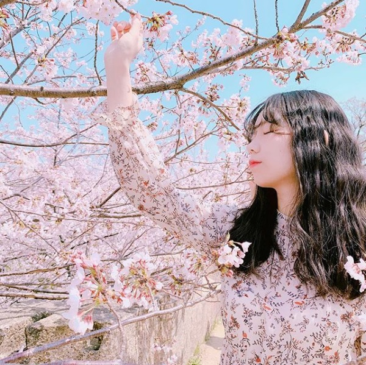

作者簡介
不朽│泰勒

90後香港女生，畢業於台灣師範大學國文系。
2015年，開始在Instagram上發表文字創作，目前已累積超過23萬追蹤者。
喜歡天空、大海和月亮。偶爾悲傷，儘量善良。終其一生努力成為一個溫柔的人。
「如果有甚麼東西可以留下，那麼我相信這些細碎的文字將會綻出不朽的花。」
光亮的／快樂的／溫柔的／好的自己
這個世界裡，溫柔有千百萬種樣子，
但你要記得，留一種溫柔給自己。
那種感覺，像是在一個巨大的迷宮裡，不知道要往哪一個方向走，好像往哪裡走都不對，往前走丟失了你，往回走丟失了自己。 原來太愛一個人的時候，是會忘記怎麼愛自己的。
嘿，你好好地感謝過自己嗎。
感謝自己陪自己走了那麼遠的一段路，感謝自己受過那麼多的痛苦，感謝自己努力了那麼久。
親愛的，謝謝你，以及，辛苦你了。
你要努力，以後你想要的，要自己給自己。
我花了好長的一段時間梳理那些悲傷，然後沿著那條蜿蜒曲折的路把自己找回來，拾獲自己。終於不再需要去討好甚麼人，終於不再需要去做那個別人眼中喜歡的模樣，終於不需要委屈自己和為難自己了。
原來我一直都是自己的模樣，而這個原本的模樣就已經足夠閃亮。
善良是因為我們知道世界缺少了這一種溫柔。
我們豢養著什麼樣的柔情，就會滋長出甚麼樣的神情。
你要相信，世界其實是這個樣子的，在許多的斷壁殘垣裡面也會驚見良辰美景，也會在眾多淺水浮花禮瞥見蒼茫肅殺。
偶爾任性地放任自己沉浸於回憶之中，懂得過去的美好所以更加珍惜未來的每一個時光。
手握著執著不慌不忙地走向自己想去的地方，踩著的每一步都牢牢穩固並且帶著敦厚的笑容和過去揮手說再見。
無論好與壞也從不貪婪，感謝自己擁有這些層層斑駁的繁花綠葉。
對在乎的人最好也是最溫柔的方法是給對方一個最美好的自己。
你知道嗎，我願意，為了你，成為更好的自己。
愛情的模樣，其實從來不需要答案。
愛一個人就像是候鳥一樣吧，用盡畢生的力量學會怎麼飛翔、怎麼遷移、怎麼同行、怎麼離別。
有些人來到你的世界是為了教會你痛楚和悲傷難過，然而有些人來到你的世界僅僅是為了告訴你，你值得幸福也值得被愛。
你以為失去就是失去，可是你不知道失去的另外一種叫法是尋獲，那個時候你雙手緊握的錯誤，讓你擁抱不了未來，後來你失去了海洋，卻拾獲了離岸。
也許生命的本質就在於經歷。
在這條迂迴的路程裡面，原來我們一直都在和自己相遇的路上。
灰暗的／悲傷的／疼痛的／壞的自己
習慣悲傷，就不再嚮往陽光。
你總是那麼要強，才會錯過那麼多的溫柔。
我們會學會接受失去，但我們從來不會習慣失去，因為失去這回事，是無論經歷幾次，都還是會痛得喘不過氣來。
如果我們都可以學會不要用傷害對方來尋找溫暖就好了。
生命一定會有那些你忍不住想要逃離出生命的時刻。一定有的，那個時候大概像是在海洋裡最深處最深處的地方吧，無處可逃、無處不在的水，像是溺水一樣，總是想要抓住些甚麼，然而你會發現你甚至連伸出手的力量也沒有，你在那個無人的海域裡，只能任由自己掉落進比海更深的地方去。
你總是做甚麼事都陷得太深太深。
我們要懂得，許多路都必須要自己去走，感謝那些相遇的時光，感謝那些切時的陪伴，而不是佔據著某個人的世界。
有時候，正正因為回不去我們才特別懷念，也正正因為回不去，那些記憶才顯得那麼珍貴那麼美。
原來我們從來沒有想過，悲傷是與生俱來的能力，就像是我們能感受到快樂，感受到幸福一樣。
也許就像是海吧，我始終相信，海有潮起潮落，人也有。
有那些相對的痛楚，就代表著有那些相對的快樂存在。
每個樣子都是你自己，而你因為過去所有的經歷而必須變成現在這個模樣，所有的過去都印證著今日的自己，都是必經之路。
如果可以，就把悲傷拿去曬一曬吧，它們值得你去面對，值得你的安撫，值得你的好好善待。
因為悲傷不是你的錯，墜落也不是你的錯。
我終於知道，我可以當個悲傷的人也沒關係。
因為對這樣的人來說，快樂很可貴，因為可貴，所以份外珍惜，像是七月流火的沙漠中那一滴通透的泉水一樣。